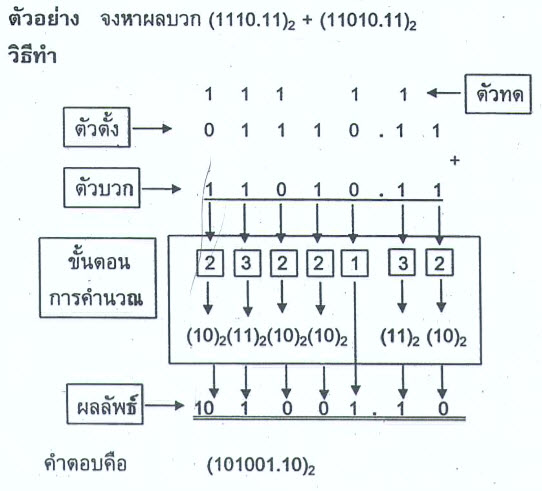
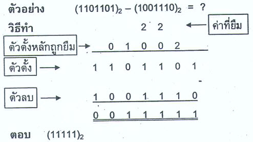

3.1 หลักการของการบวกในระบบเลขฐาน
การบวกในระบบเลขฐานมีหลักการคล้ายกับการบวกเลขฐานสิบ คือบวกตัวเลขในหลักเดียวกันจากขวาไปซ้าย และถ้าผลบวกมีค่ามากกว่าหรือเท่ากับค่าฐาน จะต้อง "ทด" ไปยังหลักถัดไป ตัวอย่างเช่น ในเลขฐานสอง เมื่อบวก 1 กับ 1 จะได้ผลลัพธ์เป็น 10 ซึ่งหมายถึงได้ 0 และทด 1 ไปยังหลักถัดไป
หลักการนี้สามารถใช้ได้กับทุกระบบเลขฐาน ไม่ว่าจะเป็นฐานสอง ฐานห้า หรือฐานสิบหก โดยต้องคำนึงถึงค่าฐานและสัญลักษณ์ตัวเลขที่ใช้ในแต่ละระบบ
3.2 ตัวอย่างการบวกเลขฐานสอง
เลขฐานสองเป็นระบบเลขฐานที่ใช้มากที่สุดในงานคอมพิวเตอร์ โดยใช้เพียงตัวเลข 0 และ 1 การบวกเลขฐานสองมีรูปแบบง่ายๆ ดังนี้
- 0 + 0 = 0
- 0 + 1 = 1
- 1 + 0 = 1
- 1 + 1 = 10 (ได้ 0 และทด 1)
การบวกหลายหลักจะใช้หลักการเดียวกันกับการบวกเลขฐานสิบ แต่ต้องระวังการทดเมื่อผลรวมเท่ากับหรือมากกว่าสอง

3.3 หลักการของการลบในระบบเลขฐาน
การลบในระบบเลขฐานใช้หลักการคล้ายกับการลบเลขฐานสิบ คือถ้าตัวตั้งน้อยกว่าตัวลบ จะต้อง "ยืม" จากหลักถัดไป การยืมในแต่ละฐานจะยืมตามค่าฐาน เช่น ในฐานสอง เมื่อยืมจะได้ค่าเพิ่มเป็น 2 ในหลักนั้น
การลบในระบบเลขฐานจำเป็นต้องเข้าใจค่าประจำหลักและการยืมอย่างถูกต้อง เพื่อหลีกเลี่ยงความผิดพลาดในการคำนวณ
3.4 ตัวอย่างการลบเลขฐานสอง
ในการลบเลขฐานสอง กรณีที่ไม่ต้องยืมจะคำนวณได้ง่าย เช่น 1 – 0 = 1 และ 1 – 1 = 0 แต่ถ้าเป็นกรณี 0 – 1 จะต้องยืมจากหลักถัดไป ทำให้หลักนั้นกลายเป็น 2 และคำนวณต่อไปตามขั้นตอน
วิธีการนี้เป็นพื้นฐานสำคัญของการทำงานในวงจรดิจิทัลและหน่วยประมวลผลของคอมพิวเตอร์

3.5 การประยุกต์ใช้การบวกและการลบเลขฐาน
การบวกและการลบในระบบเลขฐานถูกนำไปใช้ในหลายด้าน เช่น
- การดำเนินการของหน่วยประมวลผลในคอมพิวเตอร์
- การเขียนโปรแกรมและการคำนวณข้อมูลดิจิทัล
- การสื่อสารข้อมูลและระบบเครือข่าย
ความเข้าใจพื้นฐานเหล่านี้ช่วยให้ผู้เรียนสามารถต่อยอดไปสู่การเรียนรู้ระบบคอมพิวเตอร์ขั้นสูงได้